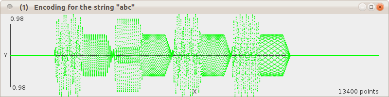
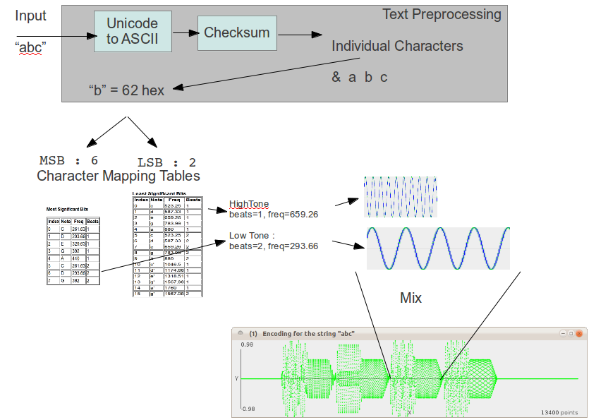
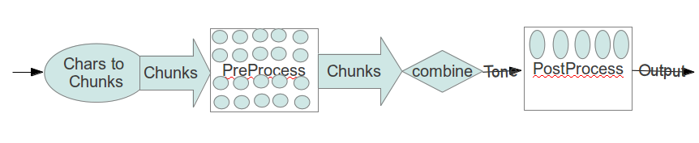
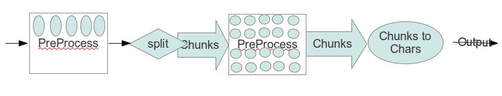
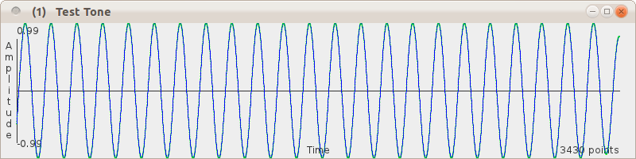

- David LeeThese sound exactly like computers did in 1950's SF movies !!! Finally the future is here !
Short Version
The implementation was first written as a command-line application in Java. The Web service is the same application with a simple embedded (Jetty) HTTP server.
Encode
- text input is converted into ASCII (Punycode with a checksum)
- each character is mapped to a high note, low note and duration (notes taken from a pentatonic scale)
- pure tones are generated and shaped according to the mapping

four pairs of tone bursts : checksum and the three characters
Decode
- incoming tone is trimmed
- tone is split into chunks, each corresponding to one character
- each chunk is analysed to find tones present and durations
- tones mapped to ASCII characters
- text reassembled and converted back
Long Version : Introduction
This write-up is rough & ready, mostly I wanted notes for myself, offboard memory. But however incoherent, hopefully it contains enough information to explain how this thing works.
There is some digital signal processing jargon, but DSP can just be treated as black-box stuff, there's really no need to go into the detailed maths to build things. (It's been many years since I last worked on stuff like this and my maths is totally rusted, the revision I did for this was mostly skimming Wikipedia - see Reference links).
Facets of Beep
It took me about a month part-time to put the service together, but making another implementation would take much less time. My early attempts used a fairly suboptimal system configuration and most of the time was spent trying to optimize it. Now a usable configuration has been arrived at, the optimization overhead is no longer necessary. But space exploration can be fun...
- Beeps and the Web : see ChirpChirp [and PS below]
- DSP Optimization using a Genetic Algorithm : the first version of the system was sensitive to noise and distortion so I added some filters etc. for pre- and post-processing. There were a lot of parameters to tweak so I hooked up a genetic algorithm to optimize the thing automatically.
- DSP Representation on the Web of Data : to be able to change configuration and parameters easily, a systematic representation was needed. I hacked up the current internal representation as I went along, but it's crying out to be done in a standard fashion. RDF is the obvious choice, so I've started a DSP vocabulary/ontology. I know exactly how to proceed with this, see Future Directions.
Design Considerations
The original idea was to encode HTTP URLs as little tunes, with the characters in URLs somehow mapping to musical notes. It's essentially the same idea as used in touch-tone phone signals, but tweaked to make the beeps easier on the ear.
Text Processing
International coverage (i.e. IRIs) is fairly essential, which basically means supporting Unicode. Because of this it was decided not to include any optimisations or other special features for URLs, and simply support arbitrary text. Unicode contains a lot of characters, and mapping from these to musical pitches directly is almost certainly unfeasible. However Punycode is an encoding syntax by which a string of Unicode characters can be transformed uniquely and reversibly into a much smaller character set. Basically it's a mapping to ASCII. Roughly speaking, characters that can be expressed in ASCII are expressed that way, but multiple ASCII characters are used to represent other individual Unicode characters. In general, the cost of reducing the size of the character set is an increase in the resulting string length.
Phonic Constraints
To achieve a reasonable compromise between length of (beep) messages, musicality and implementation complexity, it was decided that a maximum of two concurrent tones (one bass, one treble) was probably most suitable. By restricting these to a pentatonic scale, arbitrary combinations of notes could be used without major dissonance. Another consideration was that generic hardware should be able to transmit and receive the beeps, so a range of pitches was chosen that should be suitable for common electroacoustic transducers, i.e. nothing too low or too high (approx. 250-1500Hz, which is around female speech range and a bit higher, or an extended soprano singer). The restriction to the notes of the pentatonic scale (i.e. 5 per octave) meant a little more space for data was desirable, so the treble notes may appear as half- or whole-length.
This may give the impression a lot of planning went into this aspect : not really, most decisions were made during experimentation, based on what sounded about right.
Encoding
Generating Web Beeps is relatively straightforward, details of the requirements can be found in the specification, there's an example of how this may be implemented in Java in the source code.
This is how it's done:

DSP Blocks
To play around with processing the audio signals both as individual character chunks and the combined signal, the following pipeline was set up:

sorry messy diagram - will tidy later
This is the generalized form of the setup - in practice not really needed, experimentation showed that virtually no pre- or post-processing was required.
The Chars to Chunks block is the most interesting bit. Each chunk, corresponding to a single ASCII character, has a high frequency and a low frequency component (high and low bits of the char) of duration 1 or 2 units.
Lookup tables are used to determine appropriate frequencies for the low tone and high tone, then the corresponding sine waves are generated and summed.
Decoding
Getting the text back out from the beeps is rather more convoluted (hee hee), though is based on standard digital signal processing (DSP) techniques.
Again, a generalized pipeline was set up. Here pre- and post-processing was more of a consideration.

Split is done simplify by locating the start of the tone and then chopping it into equal-sized lengths correcponding to the duration of individual tones.
Chunks to Chars is the interesting bit here. The decoder has to find what tone (if any) occurs in each half of the chunk. Some kind of a pitch detector is needed.
Implementation
The reference implementation has been written in Java.
Generating signals is pretty easy, but manipulating them can get hard. So I assumed I'd need to use a piece of kit like Octave (very like Matlab, only open source). But as I got into it, it turned out to be straightforward, given the material available on the Web.
For an internal representation of signals I started with a
List<Double>, expecting to have to turn everything over to
arrays at some point for performance (arrays give me a headache, always
out-by-one). That point didn't arrive, although I've had to translate to/from
arrays here and there for interfacing with libs. Long live
Collections!
Visualization
I started by playing with generated tones in Audacity, passing them to and from code as .wav files. Very clunky - it quickly became obvious there was something I needed above anything else: a simple way of visualizing signals.
Scales and offsets are always a pain, but it didn't take that long to get something together that was usable:

Plotter.java - a little bit of Swing which takes a List<Double> and jams it in the window.
FFT Detection
The decoder was first developed using FFT for pitch detection - a suitable FFT class was easily found online (a direct port of a C version). A peak detector (to identify the peaks in the power spectrum delivered by the FFT) was also needed. After several unsatisfying experiments I found a public domain peak detector. The FFT+peak detector setup basically worked but proved very sensitive to noise and distortion. The code for this is still in the repository, it's handy having FFT around for spectrum analysis.
Pre- and Post-Processing
Because of the robustness problem, I hooked up a series of processing blocks at various points in the pipeline to help reduce harmonic distorion artifacts and out-of-band noise. Basically filters plus simple envelope shapers and normalizers.
Cross-correlation Blind Alley
So I tried a second approach, experimenting with cross-correlation. My intuition said there must be some way of correlating individual reference tone sine waves with the Beep signals. Rather than run through every frequency, as in FFT, just pick the ones of interest, the ones known to have been used in generating the signal.
Parameters, Parameters, Parameters
So with the FFT setup I had a bunch of different pipeline modules, each needing two or three parameters. This was a problem, especially since at least some of them would interact with each other.
So I got coding again :
- refactored the code to allow a systematic way of passing parameters to each of the modules
- set up a simulation of a noisy line between encoder and decoder
- decided on a fitness measure based on accuracy, performance etc.
- set up a genetic algorithm to make lots of little simulations and breed them
Some Parameters
This is the current setup. Note that many of the parameters have the value .on = false. It turned out that given a better pitch detection algorithm, most of these were redundant.
Codec : class org.hyperdata.beeps.DefaultEncoder
Empty Pipeline
Encoder.pre
Component : Encoder.pre.chunkEnv = class org.hyperdata.beeps.processors.EnvelopeShaper
Encoder.pre.chunkEnv.on = false
Encoder.pre.chunkEnv.attackProportion = 0.06
Encoder.pre.chunkEnv.decayProportion = 0.13
Component : Encoder.pre.chunkNorm = class org.hyperdata.beeps.processors.Normalise
Encoder.pre.chunkNorm.on = false
Empty Pipeline
class org.hyperdata.beeps.DefaultDecoderCodec : class org.hyperdata.beeps.DefaultDecoderDecoder.core
Component : Decoder.core.cropper = class org.hyperdata.beeps.processors.Cropper
Decoder.core.cropper.silenceThreshold = 0.39328963702325803
Decoder.core.cropper.on = true
Component : Decoder.core.normalise = class org.hyperdata.beeps.processors.Normalise
Decoder.core.normalise.on = false
Component : Decoder.core.chunker = class org.hyperdata.beeps.processors.Chunker
Decoder.core.chunker.cropProportion = 0.6337724901356069
Decoder.core.chunker.on = true
Component : Decoder.core.pitchFinder = class org.hyperdata.beeps.pitchfinders.GoertzelPitchFinder
Decoder.core.pitchFinder.gThreshold = 4194.939772585178
Decoder.pre
Component : Decoder.pre.compressor = class org.hyperdata.beeps.processors.Compressor
Decoder.pre.compressor.on = false
Decoder.pre.compressor.windowLength = 464
Decoder.pre.compressor.lowThreshold = 0.6343658962166174
Decoder.pre.compressor.highThreshold = 0.760342929650305
Component : Decoder.pre.HP_FIR = class org.hyperdata.beeps.processors.FIRProcessor
Decoder.pre.HP_FIR.shape = HP
Decoder.pre.HP_FIR.on = false
Decoder.pre.HP_FIR.window = Hamming
Decoder.pre.HP_FIR.cutoff = 100.94422117466493
Decoder.pre.HP_FIR.npoints = 1228
Component : Decoder.core.normalise = class org.hyperdata.beeps.processors.Normalise
Decoder.core.normalise.on = false
Component : Decoder.pre.LP_FIR1 = class org.hyperdata.beeps.processors.FIRProcessor
Decoder.pre.LP_FIR1.shape = LP
Decoder.pre.LP_FIR1.on = false
Decoder.pre.LP_FIR1.window = Hanning
Decoder.pre.LP_FIR1.cutoff = 10285.082818002804
Decoder.pre.LP_FIR1.npoints = 3795
Component : Decoder.core.normalise = class org.hyperdata.beeps.processors.Normalise
Decoder.core.normalise.on = false
Component : Decoder.pre.LP_FIR2 = class org.hyperdata.beeps.processors.FIRProcessor
Decoder.pre.LP_FIR2.shape = LP
Decoder.pre.LP_FIR2.on = false
Decoder.pre.LP_FIR2.window = Hanning
Decoder.pre.LP_FIR2.cutoff = 1125.173350363232
Decoder.pre.LP_FIR2.npoints = 89
Component : Decoder.core.normalise = class org.hyperdata.beeps.processors.Normalise
Decoder.core.normalise.on = false
Decoder.post
Component : Decoder.post.chunkNorm = class org.hyperdata.beeps.processors.Normalise
Decoder.post.chunkNorm.on = false
Component : Decoder.post.chunkEnv = class org.hyperdata.beeps.processors.EnvelopeShaper
Decoder.post.chunkEnv.on = true
Decoder.post.chunkEnv.attackProportion = 0.14
Decoder.post.chunkEnv.decayProportion = 0.091Goertzel to the Rescue
After spending loads of time on the FFT then Danny's Own Correlation versions, I remembered the close similarity between the encoding here and the encoding of DTFM signals. How's that usually done? Turns out that there's an algorithm that in effect does the kind of known-freq correlation thing I was looking for. It goes by the name of Goertzel. What's more it's remarkable simple - from Wikipedia:
s_prev = 0
s_prev2 = 0
normalized_frequency = target_frequency / sample_rate;
coeff = 2*cos(2*PI*normalized_frequency);
for each sample, x[n],
s = x[n] + coeff*s_prev - s_prev2;
s_prev2 = s_prev;
s_prev = s;
end
power = s_prev2*s_prev2 + s_prev*s_prev - coeff*s_prev*s_prev2;In Web Beep, the frequencies known to have been used in the creation of Beeps (in the Character Mapping tables) are passed to the Goertzel algorithm in turn, to test each chunk in turn.
The values obtained are used for a reverse-lookup of the characters from the frequency/duration combinations.
Notes/ Future Directions
An in-browser Javascript implementation seems like a good step.
Applications for Web Beep
Dunno really, but see ChirpChirp [and PS below]
As a kind of QR Code for the ear, Web Beeps should be useful in a lot of places. Suggestions please...
Ring Tone - use your email, Home Page or personal URI.
Application for the DSP bits
Take it from me, pluggable, modular, parameterized, declaratively-configurable DSP systems should have plenty of applications. Making such things Web-friendly would almost certainly be very advantageous. So I've started a DSP vocab/ontology.
The Java representation contains the important structural information needed
for described DSP systems, so my plan is to add a variant on the
toString() method in the classes of the code
(describe()) to deliver RDF/Turtle and use a bit of reflection to
get the code to describe itself.
To enhance this a bit there's David Huyn's RDFizer Javadoc thingy, which I plan to tweak to use HTTP URLs (rather than its current URNs).
Now if someone will please suggest applications for Web-friendly pluggable, modular, parameterized, declaratively-configurable DSP systems...
Patent Pending?
No. Software patents hurt innovation.
In any case, I'm sure many variations of this have been done before, though it's hard to find out what there is. Searches I've tried mostly led to something related to mobile/cellphone ringtones (I wanted the name "Web Tone" but it's already taken).
The basic idea is fairly trivial: what if you had something like DTFM tones only not so hard on the ear? Given that, implementations are pretty obvious given minimal background knowledge of character encoding, music and DSP. Simple matter of guesswork, experimentation & banging out the code. The implementation described here is pretty arbitrary, mostly based on what seemed like a good idea at the time.
PS. I already held Danbri responsible for the idea as he'd been talking about something vaguely similar recently. What I'd completely forgotten was that he'd suggested exactly this idea - and even done a write-up: ChirpChirp.
OMG, I have become Danbri's personal LazyWeb...
(c) Danny Ayers
This work is licensed for reuse
Creative
Commons